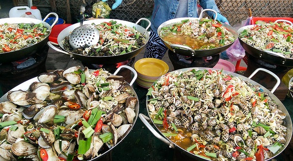

NHA TRANG,THIÊN ĐƯỜNG DU LỊCH,BIỂN ĐẢO
GIỚI THIỆU DU LỊCH NHA TRANG
Thành phố biển Nha Trang là thủ phủ của tỉnh Khánh Hòa, thuộc miền duyên hải Nam Trung bộ Việt Nam. Vịnh biển Nha Trang là một trong những vịnh biển đẹp nhất thế giới, đó là món quà vô giá mà thiên nhiên ban tặng cho vùng đất này.

ĐẶT KHÁCH SẠN NHA TRANG
Khách sạn ở Nha Trang hầu hết đều nằm gần biển để đáp ứng nhu cầu nghỉ dưỡng, tắm biển của du khách. Đi du lịch Nha Trang bạn nên chọn khách sạn theo tiêu chí khu vực sẽ nghỉ, sau đó đến hạng sao và giá tiền. Dưới đây là những khu vực bạn nên đặt khách sạn.

MÓN NGON NHA TRANG
Nha trang không chỉ nổi tiếng với những bãi biển trong xanh, những hòn đảo đẹp như mơ, mà nơi đây còn để lại ấn tượng với du khách bởi những món ngon khó cưỡng mang đậm hương vị của biển đảo. Hải Sản Tươi Sống: Hải sản là 1 phần không thể thiếu trong ẩm thực Nha Trang, với bờ biển dài và có truyền thống khai thác hải sản lâu đời, nha trang chính là thiên đường cho những ai yêu thích các món ăn đậm chất biển.

- Ốc bàn tay: nha Trang có một loại ốc khá đặc biệt là ốc bàn tay, thịt con ốc to bằng bàn tay được bày sẵn trong tủ kính. Khi có khách ăn, người bán hàng mới thái nhỏ, hấp sơ lại rồi bày ra đĩa.
- Ốc len xào dừa: Yếu tố thu hút của món ăn này ngoài vị béo ngậy của nước cốt dừa là cảm giác “đã” của việc đưa miếng thịt ốc xanh màu ngọc lọt gọn vào miệng, cảm nhận vị thơm béo quyến rũ.
- Cồi điếu Nha Trang: Loại ốc này sống ở độ sâu từ 15-20m trong những rạn, gành đá san hô. Chính vì vậy, việc bắt cồi điếu là cả một công đoạn khó khăn. Ngư dân phải xắn từng tảng đá to mang lên bờ, sau đó mới đục đá ra để bắt ốc.
- Ốc giấm: Ốc giấm có hình dáng khá đẹp với nhiều vân nâu trắng đều đặn ở bên ngoài vỏ. Đặc biệt nữa, nó là một trong những ít ỏi ốc có thể tách ruột và vỏ khi còn sống.
NHỮNG BÃI TẮM ĐẸP NHẤT NHA TRANG
Bãi tắm trung tâm thành phố Nha Trang.


NHỮNG ĐIỂM DU LỊCH KHÁC TRONG THÀNH PHỐ
Chùa Long Sơn: hay còn gọi là Chùa Phật trắng trước có tên là Đăng Long Tự. Ngôi chùa này được xây dựng cách đây hơn một trăm năm, trải qua nhiều lần trùng tu, và đến nay là ngôi chùa nổi tiếng nhất tỉnh Khánh Hòa, chùa có tượng Phật Trắng khổng lồ..

Dinh Bảo Đại: là một danh từ thường thấy của người Việt Nam dùng để chỉ các dinh thự được Bảo Đại sử dụng làm nơi làm việc, nghỉ ngơi trong thời gian ông làm Hoàng đế Đại Nam rồi Quốc trưởng Quốc gia Việt Nam. Các dinh thự này đều có kiến trúc kiểu Pháp rất hài hòa, nằm rải rác tại các điểm danh thắng của Việt Nam. Hầu hết chúng hiện nay đều được sử dụng làm điểm tham quan du lịch.

Bãi Đá Hòn Chồng: là một trong những điểm tham quan khá hấp dẫn của Nha Trang. Bất cứ du khách nào đến đây đều rất hứng thú khi nghe những câu chuyện xung quanh về quần thể đá Hòn Chồng. Điều kỳ lạ hấp dẫn du khách là những tảng đá lớn nằm chồng chất lên nhau bao đời nay nhưng sóng biển và mưa gió không thể nào xô ngã được.

Chợ Đầm: Có người đã từng nói nếu bạn muốn biết cách sinh hoạt cũng như văn hóa của một vùng miền nào dó thì bạn hãy đến với các khu chợ. Chợ Đầm là một trong những điểm đến không thể thiếu trong những hành trình du lịch của bất kỳ một công ty lữ hành hay của những du khách.

Viện Hải Dương Học: nằm bên cảng Cầu Đá, thành phố biển Nha Trang là một Viện nghiên cứu biển hàng đầu ở Đông Nam Á. Đây là nơi lưu giữ, trưng bày hàng chục nghìn mẫu sinh vật, động thực vật biển. Đến thăm Viện Hải Dương Học, bạn sẽ được tận mắt xem bảo tàng sinh vật biển với trên 20.000 mẫu vật của hơn 4.000 loại sinh vật biển và nước ngọt, bên cạnh đó là những mẫu vật sống được nuôi thả trong bể kính.

Bãi Dương: Từ trung tâm thành phố, chạy theo đường Trần Phú, qua cây cầu cùng tên, về hướng Đông Bắc bạn sẽ đến 2 bãi tắm khác của Nha Trang: Bãi Dương và bãi Hòn Chồng. Khác với các bãi trung tâm, 2 bãi tắm này khá yên tĩnh. Bãi cát dài, nước lặng, sóng yên, ra xa hàng chục mét nước cũng chỉ ngang ngực. Vào những ngày triều rút, biển cạn trơ đáy, nhiều du khách chân trần lội ra ngoài xa để xem người dân cạy hàu, bắt ốc…

XQ Nha Trang: Nằm ở một vị trí khá đẹp trên đường Trần Phú, Trung tâm Nghệ thuật XQ Nha Trang có quy mô hoạt động như một làng nghề thêu tay với một quy trình công nghệ khép kín đặc biệt. Chỉ cần bước vào khuôn viên là bạn đã lạc vào một không gian yên tĩnh, nghệ thuật, đầy chất thơ, khác hoàn toàn với những con phố náo nhiệt bên ngoài.

TRÒ CHƠI TRÊN BIỂN HẤP DẪN
đi du lịch Nha Trang, ngoài tận hưởng vẻ đẹp của biển, sự độc đáo của một thành phố nằm dọc bờ biển dài 20km cùng những bãi tắm quyến rũ ở các cụm đảo đang được khai thác ngoài khơi, du khách còn được tham gia các trò chơi trên biển. Những trò chơi này tạo cho du khách cảm giác sảng khoái tuyệt vời. Tắm biển: Gần như quanh năm, biển Nha Trang trong xanh, hấp dẫn du khách khắp nơi về đây ngụp lặn, bơi lội thỏa thích.

Kéo dù: là một trong những môn thể thao mạo hiểm hấp dẫn nhất trên biển, người chơi sẽ được cột dù, rồi ca nô kéo dù bay trên không. Được bảo vệ bởi các dây khóa ngang bụng và hông, bạn sẽ được treo lơ lửng ở độ cao 70 – 100 m. Chi phí cho mỗi lần chơi khoảng 500.000 – 600.000/10 phút, tùy thuộc số người chơi.

Lặn biển: Khi tham gia, du khách sẽ được trang bị đồ nghề chuyên nghiệp như một thợ lặn bao gồm: quần áo lặn, kính mắt, ống thở,… Sau vài thao tác ký hiệu với người hướng dẫn, bạn sẽ bắt đầu hành trình khám phá đại dương ở độ sâu 10 – 15 mét. Những dãy san hô tuyệt đẹp, cùng những sinh vật biển dễ thương, đầy màu sắc sẽ cuốn hút bạn đến không ngờ.

ĐI ĐẾN NHA TRANG
Đi đến Nha Trang vô cùng thuận lợi, bạn có thể đi bằng máy bay, ô tô, tàu hỏa ...
Máy bay: máy bay là phương tiện thuận lợi nhất để đi đến Nha Trang, sân bay quốc tế Cam Ranh cách Nha Trang 35km. hàng ngày có nhiều chuyến bay từ Nội Bài và Tân Sơn Nhất đến Cam Ranh. Tới Cam Ranh bạn đi taxi về thành phố hết khoảng 250 nghìn.
Tàu hỏa: Bạn có thể đi đến Nha Trang bằng tàu hỏa, từ Ha Nội và Sài Gòn hàng ngày đều có tàu đi đến Nha Trang, bạn liên hệ với ga Hà Nội hoặc ga Sài Gòn để biết giờ tàu và giá vé.
Từ Hà Nội, có các chuyến tàu SE1, SE3, SE5, SE7, TN1 đi đến Nha Trang, quãng đường từ Hà Nội tới Nha Trang là hơn 1300km. Từ Sài Gòn, cũng có nhiều chuyến tàu đi Nha Trang, Sài Gòn cách Nha Trang 400km.
Xe khách: Các hãng xe chạy tuyến đường dài Bắc - Nam, đều đi đến Nha Trang.
VIDEO